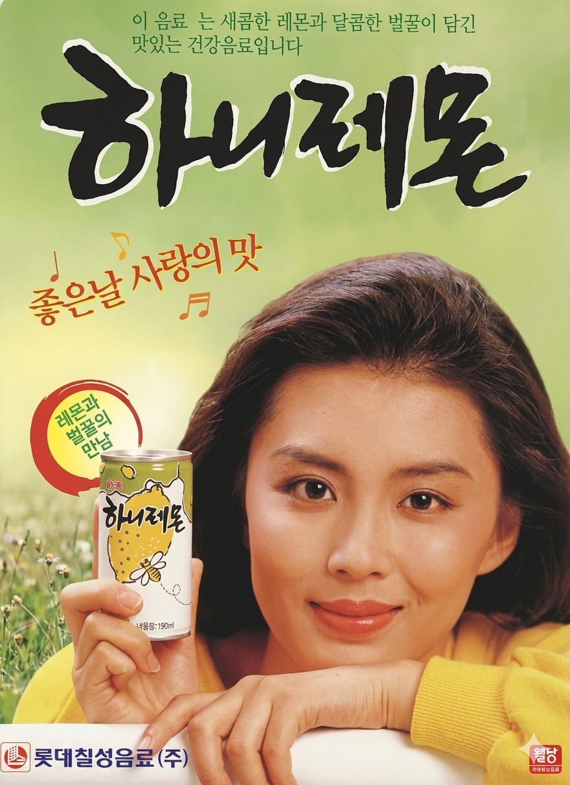

1992

김윤진
좋은날 사랑의 맛~
광고 정보
- 광고 연도 : 1992
- 광고 모델 : 김윤진
- 브랜드 : 롯데칠성음료
- 제품명 : 하니레몬
- 대표 슬로건 : 좋은 날 사랑의 맛
제품 소개
하니레몬은 롯데칠성음료가 출시한 레몬 음료로, 상큼한 맛과 청량한 이미지로 많은 사랑을 받았다. 당시 젊은 소비자층을 중심으로 인기를 얻으며 1990년대 음료 시장을 대표하는 제품 중 하나로 자리 잡았다.
광고 특징 및 당시 반응
"좋은 날 사랑의 맛"이라는 광고 문구는 밝고 경쾌한 분위기를 강조하며 소비자들에게 친근하게 다가갔다. 김윤진의 청순한 이미지와 상큼한 제품 콘셉트가 어우러져 브랜드 인지도 향상에 큰 역할을 했다.
1990년대 광고 문화
1990년대는 TV 광고가 대중문화에 큰 영향을 미치던 시기였다. 기업들은 인기 연예인을 광고 모델로 적극 기용하며 제품 이미지를 강화했고, 광고 모델의 인지도는 소비자의 구매 결정에도 큰 영향을 주었다.
롯데칠성음료 하니레몬
Lotte - hani lemon
Lotte - hani lemon